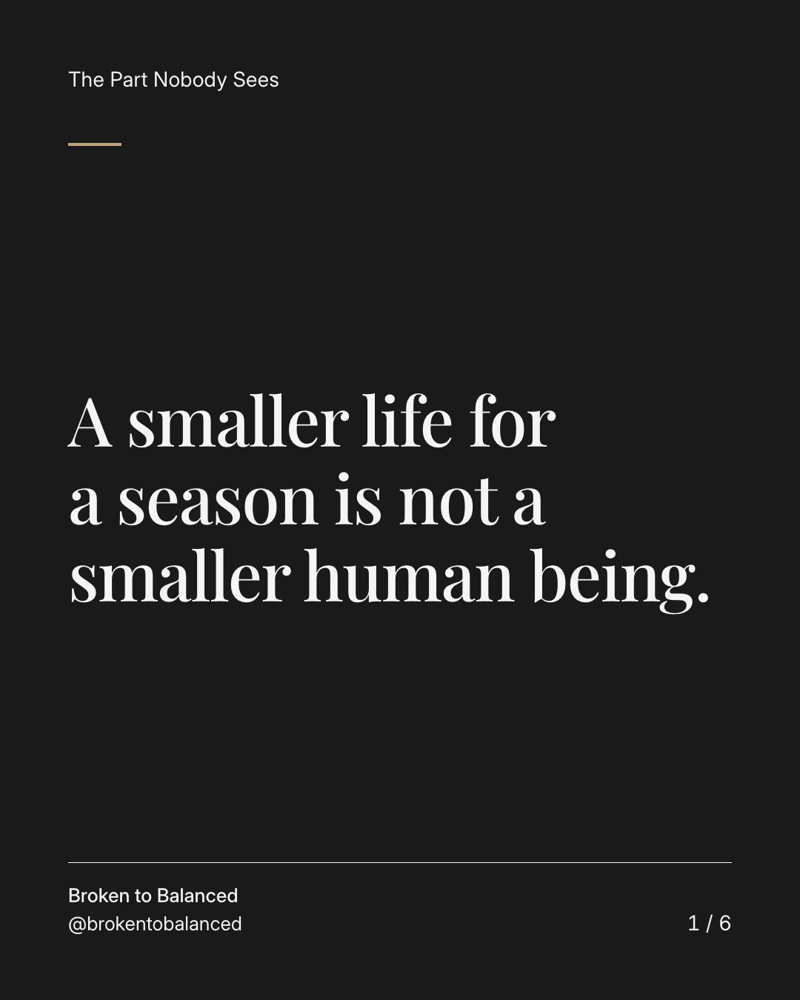
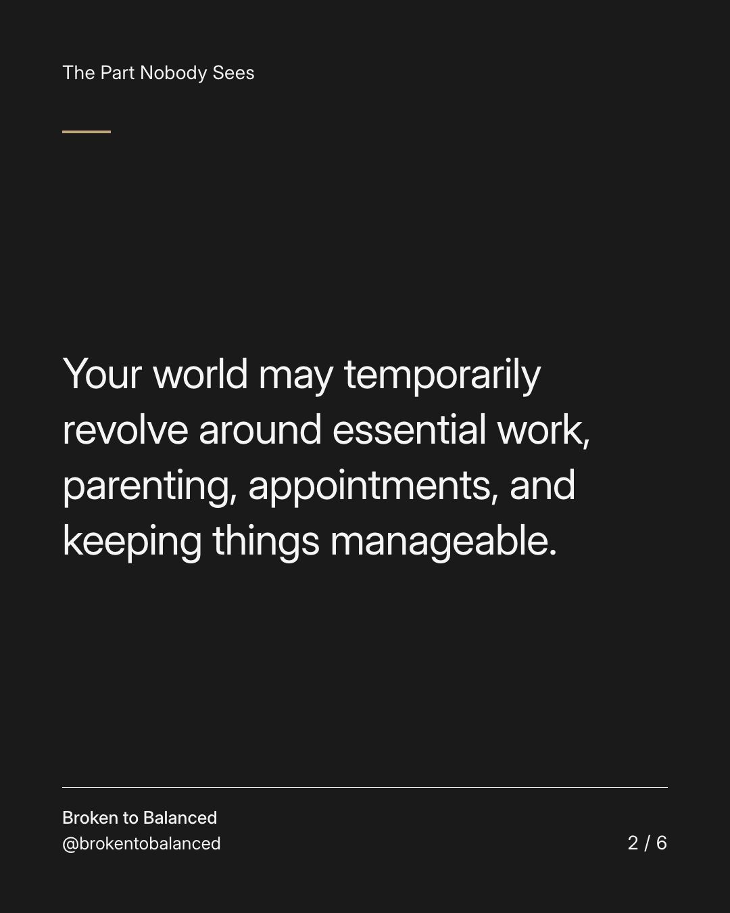
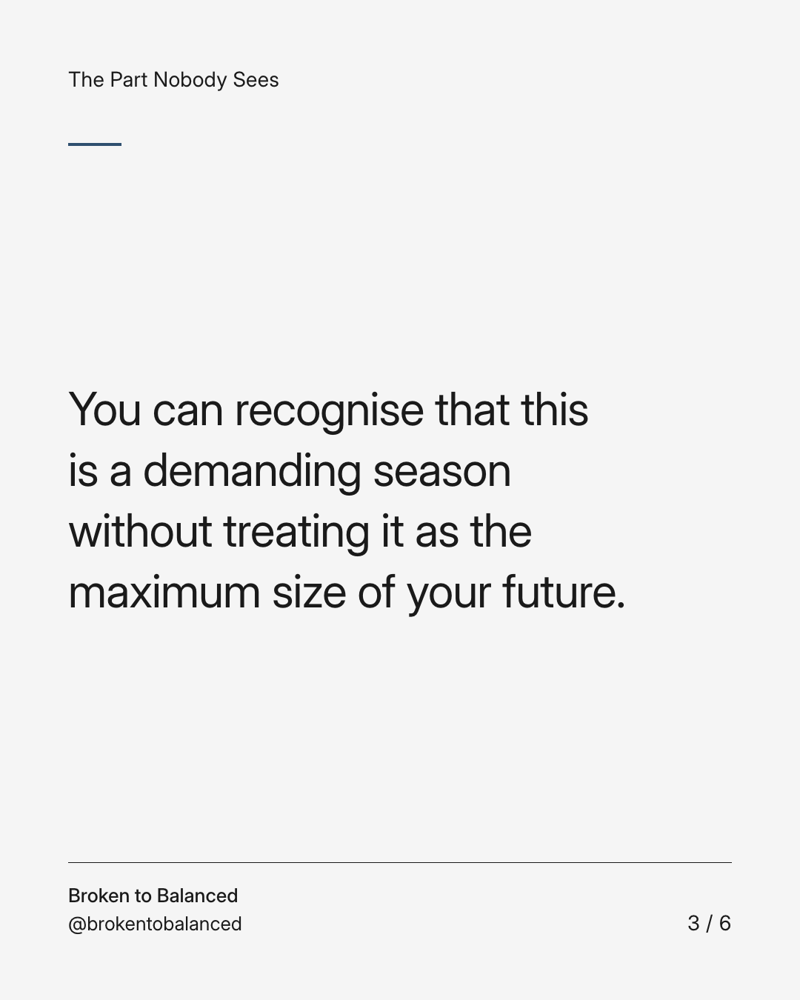
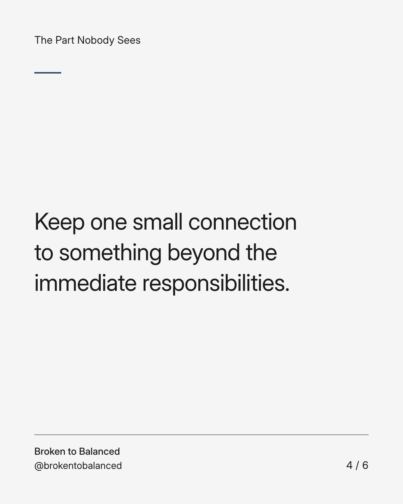
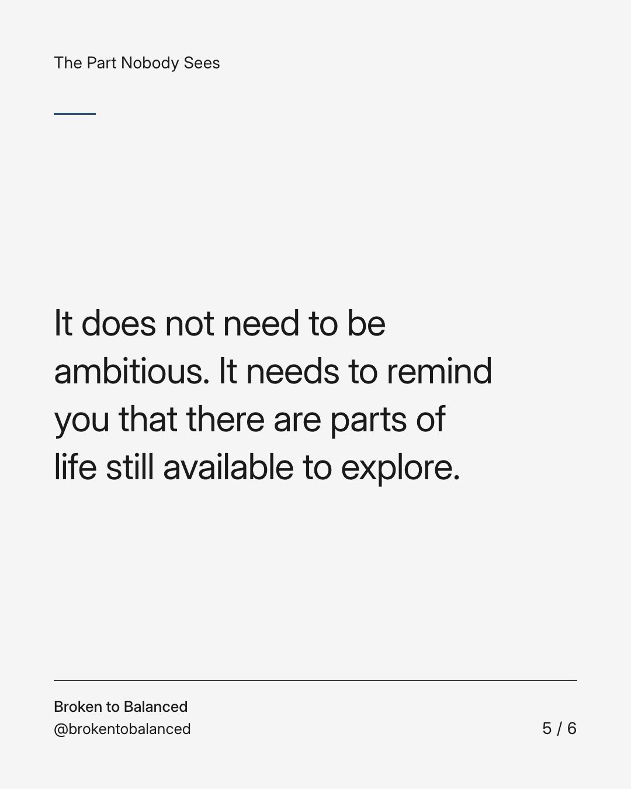
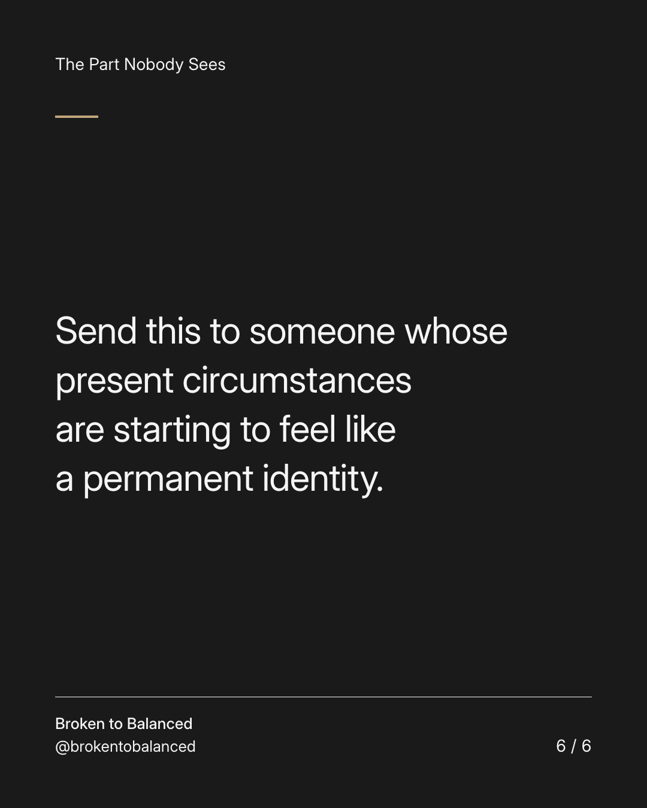

Exact text and accessibility text
A smaller life for a season is not a smaller human being.
Slide 1 of 6. A smaller life for a season is not a smaller human being.


Exact text and accessibility text
Your world may temporarily revolve around essential work, parenting, appointments, and keeping things manageable.
Slide 2 of 6. Your world may temporarily revolve around essential work, parenting, appointments, and keeping things manageable.


Exact text and accessibility text
You can recognise that this is a demanding season without treating it as the maximum size of your future.
Slide 3 of 6. You can recognise that this is a demanding season without treating it as the maximum size of your future.


Exact text and accessibility text
Keep one small connection to something beyond the immediate responsibilities.
Slide 4 of 6. Keep one small connection to something beyond the immediate responsibilities.


Exact text and accessibility text
It does not need to be ambitious. It needs to remind you that there are parts of life still available to explore.
Slide 5 of 6. It does not need to be ambitious. It needs to remind you that there are parts of life still available to explore.


Exact text and accessibility text
Send this to someone whose present circumstances are starting to feel like a permanent identity.
Slide 6 of 6. Send this to someone whose present circumstances are starting to feel like a permanent identity.
Exact caption
Plain-text fallback: select and copy the caption.